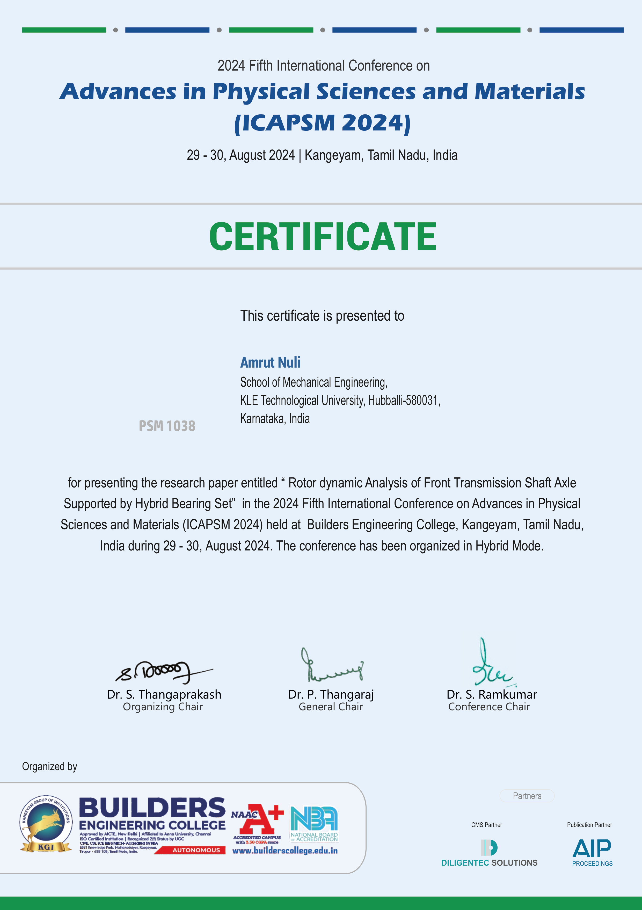

Add images/research/presentation.jpg| Conference | ICAPSM 2024 — International Conference on Advances in Production and Systems Management |
| Year | 2024 |
| Topic area | Mechanical Design, Rotordynamics, Bearing Technology |
| Tools used | SolidWorks, ANSYS Workbench, Modal Analysis, Campbell Diagram |
This paper presents a comprehensive finite element analysis (FEA) and rotordynamic study of an automotive front transmission axle shaft. The study examines the dynamic behaviour of the axle under varying operating conditions to identify critical rotational speeds and assess the stability of vibrational modes. A key contribution is the exploration of hybrid bearing configurations — combining conventional angular contact ball bearings (ACBs) with non-contact magnetic bearings — to improve vibration response and reduce mechanical losses. The MAM (Magnetic-Angular-Magnetic) configuration was identified as optimal, achieving an 18.38% reduction in peak mode deformation and a 4.59% reduction in operating frequencies compared to the conventional AAA baseline. Field survey data from authorized service centers was integrated to validate real-world failure modes.
- Optimal Configuration: MAM (Magnetic-Angular-Magnetic) hybrid bearing setup identified as providing the best balance of stability and safe speed margins.
- Deformation Reduction: 18.38% decrease in peak mode deformation vs. conventional AAA configuration.
- Frequency Optimization: 4.59% reduction in operating frequencies resulting in more harmonized dynamic state.
- Transmission Efficiency: Non-contact magnetic bearings significantly reduce friction and energy loss.
- Field Validated: Findings address bearing seal degradation and contaminant ingress — confirmed common failure modes in service centers.